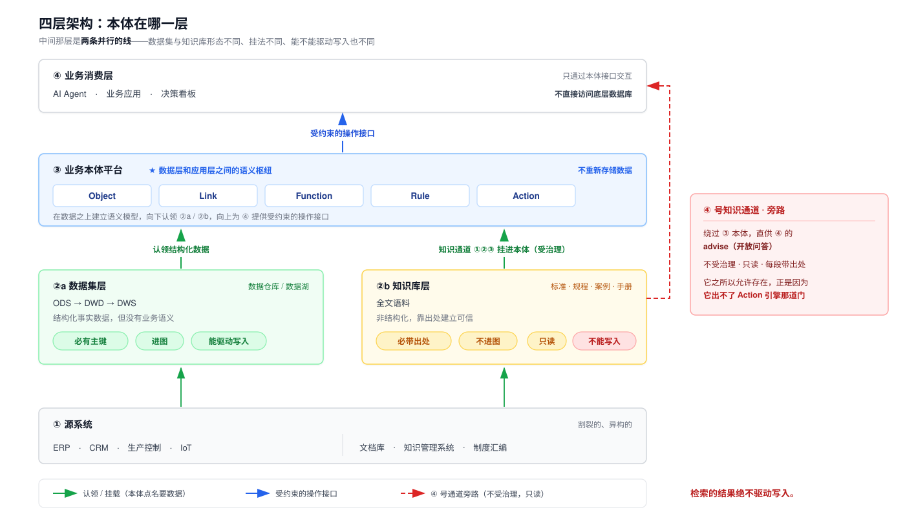

学员手册 · C-Life FDE 实战工作坊 · 180 分钟 · 纯讲解，无实操 配套课件：
slides/S1_本体论.html（讲师投屏）教材来源：本课完全基于《工程师的本体论》系列方法论文集（45 篇 + 番外）。 案例、对照表、金句均出自原文，不引入任何具体引擎的实现细节。
| 第五课 · 本体建模 + 设闸 | 本课 · 本体论 | |
|---|---|---|
| 讲什么 | 一套具体工具怎么跑：命令、IR、编译、校验、收尾清单 | 本体是什么、为什么需要、该怎么想 |
| 形式 | 讲 + 练，产出交付物 | 纯讲解，产出认知 |
| 案例 | 我们自己的项目 | 露华浓 ERP、采购 Agent 被拦的那一刻（原文案例） |
| 关系 | 实现 | 它的方法论前置 |
建议顺序：本课 → 第五课。 先明白"为什么必须有这层"，再学"我们这套工具怎么把它做出来"。
如果你只上一门：上这一门。 工具会换，这套判断不会。
读完这一课，你应该能做到：
2018 年 2 月，露华浓（Revlon）上线了一套新 ERP。
彼时的露华浓刚完成并购整合，雄心勃勃地要用新系统统一旗下所有系统——订单、库存、生产排期、财务，全部打通，终结数据孤岛。
然后，北卡罗来纳州牛津工厂的生产线出了问题：
当工人需要知道"现在该生产哪个 SKU、备多少料、发给哪个零售商"时，系统给不出一个可信的答案。
最终，露华浓无法按时向几家大型零售商供货。
| 时间 | 发生了什么 |
|---|---|
| 2018 Q4 | 净亏损超过 7000 万美元 |
| 公告后 | 股价单日暴跌超过 6% |
| 同期 | 因财务数据失真，无法按时向 SEC 提交年报 |
| 四年后 | 申请破产保护 |
讽刺的是，露华浓的数据从来就不少。
问题在于，那些系统只记录了数据，却没有记录数据之间真正的业务逻辑—— 谁依赖谁、谁触发谁、谁约束谁。
这一层缺失，让再多的数据也无法转化为一个可执行的决策。
这不是露华浓的特殊困境。这是几乎所有完成了"数字化第一阶段"的企业的共同症状。
那些系统里，存的都是切片，而不是"现实"。
露华浓的 ERP：
| 它知道 | 它不知道 |
|---|---|
| 有一个 SKU 叫"露华浓超持久唇膏 210#"，库存 12,000 支 | 这张订单是否已经触发了生产排程 |
| 沃尔玛有一张待履约的采购订单，数量 8,000 支 | 生产排程需要哪条产线腾出来 |
| 如果那条产线正在跑另一个优先级更高的订单，应该由谁来决策插单还是延期 |
这些"知道"，分散在生产主管、供应链协调员、IT 系统管理员各自的脑子里，以及一套没人敢动的 Excel 排班表中。
系统记录了结果，没有记录"法则"。
这就是我们花了二十年讨论的"数据治理"困境的本质： 不是数据不够多，而是数据里缺少了描述"实体之间如何相互关联、如何相互约束、如何相互触发"的那一层——哲学家把它叫做本体（Ontology）。
"本体"这个词听起来很玄，但有一个工程师友好版的解释。
想象一本字典。
字典里有"员工"、"订单"、"设备"、"供应商"，每个词都有定义，精确无误。 但字典不会告诉你：
字典是死的。它只记录名词，不记录物理定律。
而本体，是整个世界的物理引擎。
它不仅定义了有哪些"名词"（实体），还定义了动词（操作）和物理约束（规则）：
"员工（实体）持有操作权限（关系），可以修改订单状态（行为）， 但修改金额不能超过 10 万（约束），超出则自动触发审批工作流（连锁反应）。"
这一段逻辑，在传统数据库里，大概分散在五个不同的代码文件里，靠程序员的"约定"维持—— 任何一个人离职或者某次迭代没跟上，这条规则就悄无声息地断掉了。
露华浓的系统里，正是这样的"约定"在上线后悄悄断掉，让订单、库存、产线三张表各自成了信息孤岛。
本体的核心价值，是让这些"活的规则"像数据一样被存储、被管理、被查询。
数据记录了世界是什么，本体定义了世界如何运转。
数据是事实的存档，本体是现实的法则。没有法则，再多的事实也只是一堆彼此不相识的数字。
你可能会问：这不是个老问题吗？语义网、知识图谱，这些概念已经炒了二十年了。
因为大语言模型的出现，把这个问题从"技术债"升级成了生死线。
LLM 能力极强——能读懂需求、写代码、写报告、做分析。 但它的本质，是一个基于概率的统计机器：
现在很多企业在尝试的是：把扁平的数据表，加上一些人工治理出来的术语表，喂给 LLM 做决策。
想象一下，如果露华浓把那套割裂的 ERP 数据直接喂给 LLM，让它决策"今天牛津工厂应该优先生产哪个 SKU"——
LLM 会给出一个看起来头头是道的答案，置信度 92%。
但它不知道沃尔玛订单有优先级协议、不知道某条产线今天在换模具、 不知道某个原料供应商上周刚发来一封延期通知还没录入系统。
商业履约不接受 8% 的错误率，更不接受"我以为"。
AI 需要一个"物理引擎"来兜底。本体，就是那个物理引擎。
在 LLM 给出任何建议之前，本体层先完成约束校验： 这个操作合法吗？谁有权限做？会触发哪些连锁反应？有没有违反任何业务规则？
大模型负责理解和推理（概率），本体层负责确立边界和错误拦截（确定性）。
大模型接入企业系统后，有一类问题最难解决：
模型给的答案，外行读起来头头是道，内行读起来胡说八道。
举个例子：你让 AI 决策"明天哪批原材料可以优先入库"，它给出一份排序合理、逻辑自洽的清单。 但你的库管主管一眼就看出问题：清单里第一位的供应商，合同上有一条"季度末不接收入库"的条款，今天恰好是季度末倒数第二天。
模型没有撒谎。它只是不知道那条合同条款的存在。
这类错误，工程师通常归结为"幻觉"。但准确地说——
这不是幻觉，是因为大模型不懂业务规则。 模型的问题不在于它在概率上算错了，而在于它根本没有接触过那条约束它行为的"业务规则"。
所以解决这个问题，需要的不是更大的模型，而是一个不同的架构层。
过去十年，国内企业数字化最流行的架构选择是数据中台。
它解决了一个真实且重要的问题：把散落在各业务系统里的数据统一起来，建立一致的指标口径。 这件事做成了——大多数完成数字化建设的企业，今天都有一张能出实时报表的数据大屏。
但数据中台有一个根本性的设计边界：
它只管数据的流动，不管业务的逻辑。
| 它能告诉你 | 它不知道 |
|---|---|
| 这个供应商今年交货了 1200 次 | 这个供应商的合同当前是否处于合规状态 |
| 库存余量是 8000 件 | 这 8000 件里哪些已经被预占、预占的优先级是什么、谁有权调整 |
把这张数据表直接喂给大模型，模型拿到的是一堆精确的数字，但没有数字背后的运转规则。
| 维度 | 传统数据中台 | 本体平台（以 Foundry 为例） |
|---|---|---|
| 设计目标 | 数据的存储、加工与查询 | 业务决策的建模与执行 |
| 核心单元 | 表、列、行、指标 | Object（对象）、Link（关系）、Action（操作） |
| 业务逻辑的位置 | 散落在各种应用代码里 | 集中在本体层，可查询、可治理 |
| AI 接入方式 | 直接读表，只读 | 通过本体接口，可读可写 |
| 写回能力 | 依赖人工或 ETL 流程 | Action 触发原生写回，支持事务 |
| 权限粒度 | 表级 / 行级 | 属性级 + 操作级（精确到每个 Action） |
| 对 AI 的约束 | 无约束，模型可以自由发挥 | 前置条件拦截非法操作，后置规则确保操作合理 |
这张表里最关键的一行是"对 AI 的约束"。
传统数据中台的设计假设是：AI 只负责分析，人负责决策和执行。 但 Agentic AI 打破了这个假设——AI 开始执行操作，而不只是给出建议。
如果 AI 能直接写入系统，而系统没有业务规则层来约束它，出问题只是时间问题。
下面的 ①②③④ 是架构层的序号（自下而上），与课次编号无关。

自下而上四层：① 源系统 → ②a 数据集层 ‖ ②b 知识库层（两条并行线） → ③ 业务本体平台 → ④ 业务消费层。
③ 不重新存储数据，它在数据之上建立语义模型，向下认领 ②a / ②b，向上为 ④ 提供受约束的操作接口。
这一层如果只画成一条线，你的知识库就无处安放。
你会在很多方案里看到「源系统 → 数仓 → 本体 → 应用」这样的四条单线。 按那张图去建模，知识最后只有两个去处：要么被塞进数仓，要么被当成本体之上的"RAG 增强"。 两个去处都是错的——前者让非结构化的东西挤进结构化的位置，后者让检索结果站到了本体的上游。
| ②a 数据集层 | ②b 知识库层 | |
|---|---|---|
| 形态 | 结构化，必有主键 | 非结构化全文，必带出处 |
| 进不进本体的图 | 进 | 不进 |
| 能不能驱动写入 | 能——被 Rule 校验、被 Action 写 | 绝不能 |
| 典型来源 | ERP / CRM / IoT / 生产控制 | 国标 · 行业规程 · 案例库 · 处置手册 · 制度汇编 |
| 出路 | 走哪 | 受不受治理 |
|---|---|---|
| 知识通道 ①②③ | 挂进 ③ 本体：规则的出处挂 Rule · 附着知识挂 Object · 证据血统挂 Action | 受——尤其 ① 进写路径，违反即回滚 |
| 知识通道 ④ | 绕过 ③，直供 ④ 的开放问答（advise） | 不受——所以绝不驱动写入 |
⭐ 检索的结果绝不驱动写入。
那条旁路之所以允许存在，正是因为它出不了 Action 引擎那道门。 把④当①用——拿检索到的一段话去触发一次业务动作——就是把整套治理架空。
这个架构有一个重要的意义： AI 看到的世界，是被本体层"翻译"过的世界。 它看到的不是原始表、也不是一堆检索片段，而是有名字、有关系、有规则的业务对象。
本节只回答"本体在哪一层"。 怎么挂、挂在哪个具体位置、四条通道各自的强度、每层该数什么——第九章讲全。
本质原因：
LLM 的结构是基于概率计算的，所以它一定会有幻觉，这和是否微调没什么关系。 而且它的边界是自然语言，业务的决策边界是规则空间。两者之间没有等价关系。
用开篇那个"优先入库"的例子，看有无本体层的差异：
没有本体层时： 用户问 AI → LLM 读取供应商表和库存表 → 基于概率推断给出排序 → 排序里有一个条款异常的供应商 → 执行后违约
有本体层时：
Supplier 和 InboundOrder 两个对象的查询schedule_inbound 这个 ActionSupplier.contract_status == 'active' 且 today NOT IN Supplier.restricted_datesrestricted_dates 包含今日 → Action 被阻断，AI 自动转向下一个候选这个拦截发生在系统层面，不依赖 prompt 工程，不依赖模型的"理解能力"。 哪怕你用的是一个刚上线的小模型，只要它调用的是同一个 Action，就会经历同一套约束校验。
核心机制：
把业务规则从"模型应该知道的事"变成"系统强制执行的约束"。
前者依赖概率，后者是确定性的。
任务：为 Q3 扩产 15% 补充备料，生成采购建议并提交审批。
本体里的定义：
| 元素 | 内容 |
|---|---|
| Object | Supplier、Material、PurchaseOrder、Contract、ProductionPlan |
| Link | Supplier → Material（携带属性：交货周期、最低采购量、合规认证有效期） |
| Action | create_purchase_order，前置条件：合同状态有效 + 采购金额未超预算 + 供应商认证未过期（30 天内视为"即将过期"，需额外审批） |
Agent 的执行过程：
supplies Link 找到可供货的供应商create_purchase_order：| 供应商 | 状态 | 结果 |
|---|---|---|
| A | 合同正常，金额在预算内 | ✅ Action 执行，生成草稿工单 |
| B | 认证有效期剩余 18 天 | ⚠️ Action 标记"需额外审批"，自动通知采购负责人 |
| C | 合同状态为"暂停" | ❌ Action 被阻断，Agent 跳过并记录原因 |
LLM 负责理解任务、拆解目标、选择操作序列；本体负责校验每一步操作的合法性。
AI 的聪明，和系统的安全，分别由不同的机制保证，互不干扰。
第一，业务规则应该是一等公民——不是散落在代码里的条件判断，而是可以被查询、被审计、被 AI 读取的结构化资产。
第二，AI 与业务系统之间需要一个中间层——这个中间层不是 prompt 模板，而是真实的业务语义模型，带约束、带权限、带写回能力。
本体不是 Palantir 的专利，它是一种工程方法论。 理解它，才能真正评估什么时候用它、用多深、用在哪里。
工程师或架构师在理解本体时，容易被"知识图谱""语义模型"这些词带偏。
这些词没有错，但不够准确。对一个要支撑 Agent 执行的系统来说，本体首先要回答的是：
什么对象可以存在，怎么命名，怎么连接，怎么被读取，怎么被写入，怎么过期，怎么追溯。
这更像文件系统。
| 本体元素 | 文件系统类比 |
|---|---|
| ObjectType | 文件类型和 inode schema——定义系统里允许存在什么东西：约束、模式、决策记录、业务流程、反模式 |
| LinkType | 文件系统里的链接关系，但语义更强——不是"参见某某"的文本提示，而是可遍历、可审计、可治理的关系 |
LinkType 的语义举例：
| 链接 | 表示 |
|---|---|
derived_from |
决策血缘 |
about_concepts |
概念索引 |
cites_files |
代码锚定 |
contradicts |
矛盾 |
supersedes |
替代 |
impacts |
影响传播 |
文件系统思维和知识库思维的区别： 文件系统关心"这个对象是什么类型，和谁连接，谁能读，谁能写，何时失效，出了问题怎么修"。
ObjectType 和 LinkType 不是知识库字段，而是 AI 内存系统的 inode 和 link。
如果只有 ObjectType 和 LinkType，本体仍然只是一个结构化存储系统。
它负责：保存企业世界的结构化状态，记录决策血缘，支持检索和注入，管理记忆生命周期。
真正让它运行起来的，是 Action、Function 和 Rule。
普通工具调用只描述函数签名，比如"更新供应商状态"。 它没有说明这个操作在业务世界里是否合法、是否需要审计、会影响哪些对象、失败时如何解释。
本体里的 Action 不只是函数入口，而是带前置条件、规则、写回和血缘的受控操作。
关键不是格式，而是语义：Action 改变的是一个受约束的企业世界。
可以基于对象和链接做聚合、推导、影响分析、风险计算。 它不一定改变状态，但它定义了"系统如何理解当前世界"。
它决定：什么操作能执行，什么写回能晋升，什么记忆必须保护，什么节点应该降级。
所以，动态本体不是静态图。
ObjectType / LinkType 让世界有结构；Action / Function / Rule 让世界会运动。
动力层回答的不是"世界是什么"，而是"世界如何合法地变化"。
| 要素 | 判据 |
|---|---|
| Object | 有没有自己的生命周期？有没有独立的属性集？是否被其他对象引用？ |
| Link | 有方向吗（依据"从哪边查更自然"来选）？能带属性吗？ |
| Function | 是算出来的，不是记下来的？只读、无副作用？ |
| Rule | 是必须始终成立的约束吗？ |
| Action | 是需要被明确记录的操作吗？ |
采购场景的对象判定（原文示例）：
| 业务概念 | 是否独立对象 | 判断依据 |
|---|---|---|
| 供应商 | ✅ | 有注册→合作→停用的生命周期，被采购订单引用 |
| 原材料 | ✅ | 有规格、单位等独立属性，被订单引用 |
| 采购订单 | ✅ | 有草稿→审批→执行→完成的状态流转 |
| 合同 | ✅ | 有独立有效期，与采购订单是不同维度的关联 |
| 认证证书 | ✅ | 有过期日期和认证类型，独立于供应商主档 |
关联的方向与属性：
| 关系描述 | 方向 | 关联属性 |
|---|---|---|
| 供应商供应某种原材料 | 供应商 → 原材料 | 交货周期、最小起订量 |
| 认证证书属于供应商 | 认证证书 → 供应商 | 认证类型、发证机构 |
| 采购订单面向某供应商 | 采购订单 → 供应商 | — |
| 采购订单包含某原材料 | 采购订单 → 原材料 | 数量、单价 |
你接入大模型做采购助手。
用户问："我的订单 PO-2026-001 到哪了？" → RAG 能答。检索订单文档，拼进提示词，生成一段流畅的回复——全程只读，世界状态没有任何改变。
用户接着问："帮我把这笔订单取消，改从 ACME 重新下单。" → RAG 就卡住了。它可以生成一段"取消步骤说明"，甚至写出一段看起来像 API 调用的伪代码—— 但它不能真正执行写操作，更无法保证执行后的状态仍然符合业务规则。
差的不是模型能力，是架构层：
RAG 增强的是"生成内容的依据"，OAG 增强的是"行动的能力与边界"。
RAG 的链路：① 文档切块做 Embedding → ② 检索相关片段 → ③ 拼进提示词 → ④ LLM 生成答案
这条链路解决的是知识不足。但它有一个结构性边界：
你可以把它理解成"开卷考试"——书翻得再快，考生也不能改教科书里的内容。
对问答、总结、分析类任务，这够了。对"帮我把这笔采购批了"这类任务，不够。
LLM 在这里不是"猜一个答案"，而是"选一个受治理的操作"。
概率推理发生在选择层，确定性约束发生在执行层。
| 维度 | RAG | OAG |
|---|---|---|
| 增强的对象 | 生成内容的依据 | 行动的能力与边界 |
| LLM 输入 | 检索到的文档片段 | 业务对象 + 可用操作 |
| LLM 输出 | 自然语言答案 | 结构化操作调用 |
| 对世界的影响 | 只读 | 写操作（受规则约束） |
| 出错后果 | 答案不准 | 状态被错误改变 |
| 追溯性 | 难以还原决策依据 | 完整决策血统 |
⚠️ 一个容易混淆的点： GraphRAG、知识图谱增强检索，仍然属于"读"的范畴—— 它们帮模型更好地理解实体关系，但不提供受治理的写回路径。
OAG 解决的是另一个问题：Agent 被授权写操作时，如何保证写得对、写得可追溯。
| 能力 | 回答的问题 |
|---|---|
| 操作发现 | Agent 怎么知道能做什么、参数是什么 |
| 执行约束 | 违规操作怎么被实时拦截 |
| 决策追溯 | 三个月后怎么回答"为什么这样做" |
缺任意一层的后果：
| 缺什么 | 会怎样 |
|---|---|
| 只有发现、没有约束 | Agent 能调用但不受治理，和直连数据库一样危险 |
| 只有约束、没有追溯 | 出了事无法审计，合规团队不会签字 |
| 只有追溯、没有发现和约束 | 事后能看到问题，但事前拦不住 |
OAG 不是 RAG 的升级版，是 Agent 进入写操作时代的必要基础设施。
Agent 在调用任何操作之前，需要回答四个问题：
supplier_pk 还是 vendor_name？）这四个问题，如果靠 Agent "自己猜"，猜错一次就是一次无效调用——或者被引擎拦下，浪费一轮交互。
| # | 错误做法 | 为什么错 |
|---|---|---|
| 1 | 硬编码进 prompt | 本体一变，prompt 就得重写。操作一多，prompt 膨胀到 LLM 读不完。定义和 prompt 两份维护，迟早不同步 |
| 2 | 让 LLM 读 API 文档 | 文档是给人读的叙述性文字，不是 LLM 工具框架需要的结构化 schema。理解不稳定，token 开销大 |
| 3 | 让 LLM 读源码 | LLM 读不懂执行细节，也不该让它读——Agent 只需要知道"能调用什么"，不需要知道"怎么实现的" |
Action 的定义文件里已经写清了操作的全部语义（描述、参数、前置条件、触发规则）。 只需要一个小模块，自动把它转成 LLM 的 Function Calling 格式。
| 消费者 | 用途 |
|---|---|
| 业务人员 | 打开文件审查规则对不对 |
| 执行引擎 | 加载定义，执行操作 |
| Agent | 通过能力清单发现可调用的操作 |
当定义文件同时服务人和机器，"文档和代码不同步"的问题又少了一种来源。
好的本体层不需要 Agent 去猜它能做什么——定义本身就是说明书，一份文件同时讲给人和机器听。
假设采购 Agent 有权限直接 INSERT INTO purchase_orders。它接到任务"补充 50 万备料"，选中一家认证还有 13 天到期的供应商，写入成功。
数据库里多了一行记录。审批流没触发。信用额度没检查。业务规则全部绕过了—— 不是 Agent "有意为之"，是它根本不知道这些规则的存在。
最常见的"软约束"写法：
你在发起采购前，必须检查供应商认证有效期是否大于 30 天。| 缺陷 | 说明 |
|---|---|
| 会被遗忘 | 多轮对话后，早期指令权重下降 |
| 会被稀释 | 上下文窗口塞满其他信息后，约束被挤出去 |
| 会被绕过 | 提示词注入攻击可以让 Agent"忘记"所有约束 |
自觉遵守不是工程约束。
| 层次 | 机制 | 强度 | 可绕过性 |
|---|---|---|---|
| 提示词层 | 靠 LLM 自觉 | 最弱 | 高（注入即破） |
| API 网关层 | 校验 HTTP 请求参数 | 中 | 中（参数可伪造） |
| 本体层 | 校验业务状态 + 全局不变式 | 最强 | 低（引擎强制，无旁路） |
API 网关能检查"参数格式对不对"，但检查不了"这笔采购加上去之后，未结金额会不会超过信用额度"—— 这需要看到写入后的新状态。只有本体层的全局规则能做到。
第 1 轮：Agent 选择向 Beta 采购 8 万元。 引擎内部：前置条件通过 → 内存中创建订单 → 全局规则命中（剩余 13 天 < 30 天）→ 回滚，文件从未被写。
Agent 收到的不是 500 Internal Server Error，而是结构化拒绝：
{
"status": "rejected",
"action_id": "create_purchase_order",
"triggered_rule": "certification_validity",
"message": "供应商认证有效期不足 30 天，订单已阻断",
"current_state": {
"Supplier/S-BETA-002": { "status": "active", "outstanding_amount": 120000 },
"Certification/CERT-002": { "days_remaining": 13 }
},
"suggestion": "建议选择认证有效的备选供应商 S-ACME-001（ACME）"
}| 字段 | 作用 | Agent 能做什么 |
|---|---|---|
triggered_rule |
定位违反的规则 | 理解失败原因 |
current_state |
当时的业务快照 | 判断是临时状态还是结构性问题 |
suggestion |
可选的替代策略 | 直接调整参数重试 |
第 2 轮：Agent 改选 ACME → 认证有效、信用额度充足 → 成功。
这就是 OAG 闭环：发现 → 调用 → 被拒 → 调整 → 重试成功。 全程在本体层约束内完成，没有绕过。
对比一下很多系统的拒绝长什么样：
{ "error": "操作失败" }Agent 收到这个，只能盲试。
好的拒绝响应和"日志存快照"是同一哲学：记录上下文，而不只是记录结果。 区别是：日志给审计人员看，拒绝响应给 Agent 看——受众不同，但都需要完整的决策上下文。
快进到三个月后。合规团队发来一个问题：
"5 月 30 号那笔 28 万的采购，AI 为什么觉得能下单？当时供应商的认证状态是什么？"
这不是技术排查，是业务审计。
| 日志类型 | 典型内容 | 能回答什么 | 不能回答什么 |
|---|---|---|---|
| 数据库日志 | INSERT INTO purchase_orders ... |
写了什么 | 为什么写 |
| 应用日志 | POST /actions 200 OK |
调用成功没 | 当时业务状态是什么 |
| 监控指标 | CPU 85%, latency 120ms |
系统健不健康 | Agent 看到了什么 |
本体层决策记录的本质区别：
它存的不是"改了什么"，而是"当时世界是什么样"。
一条决策记录里有：action_id · caller · params · snapshot（当时所有相关对象的完整状态） · passed_rules · outcome · executed_at。
用这一条，完整回答合规团队：
procurement-agent-v2certification_validity、credit_limit_check不需要猜，不需要拼凑多个系统的日志。一行 JSON，一个完整的决策上下文。
| 场景 | 查什么 | 洞察 |
|---|---|---|
| ① 某供应商被 AI 频繁选中，为什么？ | 该供应商的决策次数、成功/拒绝分布、常见通过规则 | 不是 AI"偏好"某家供应商，是规则筛选的结果 |
| ② 某条规则上线后拦截了多少次？ | 拦截次数、主要触发者 | 评估规则是否过严、是否需要调整阈值（30 天改 45 天） |
| ③ 某个 Agent 的决策质量如何？ | 成功率、高频违规规则 | 成功率低不一定是 Agent 的问题——可能是它在探索边界 |
⚠️ 场景 ② 背后有一条重要判断：
误拦截比漏拦截更危险。
持续误拦截会逼业务绕过本体，整套约束就失效了。
⚠️ 场景 ③ 的价值：审计的价值是区分"Agent 犯错"和"Agent 在规则内试错"。
| 价值 | 谁受益 | 怎么用 |
|---|---|---|
| 合规追溯 | 合规团队、审计方 | 按 event_id 还原任意一次决策 |
| 模型优化 | AI 工程师 | 分析 Agent 高频违规，调整提示词或策略 |
| 规则迭代 | 业务人员 | 评估规则拦截率，决定阈值松紧 |
这三个价值指向同一件事：
信任不是一次性的授权，是持续可验证的。
2026 年 4 月，Andrej Karpathy 在 Sequoia Ascent 上说：他从未像现在这样"落后"于编程。 不是不会写代码，是工作流变了——从逐行敲代码，变成向 Agent 委派整块任务。
他给出的 Software 三代划分：
| 代 | 人做什么 |
|---|---|
| 1.0 | 人写显式代码 |
| 2.0 | 人造数据集，程序学进权重矩阵 |
| 3.0 | 人写 prompt、上下文、工具、记忆——上下文窗口就是程序，LLM 是解释器 |
这个框架很像一个 OS 的内核：CPU 是 LLM，RAM 是 Context Window，外设是 MCP、API、CLI。
不过这里有一个问题：文件系统在哪里？
Agent 可以在上下文里推理，但企业系统还需要一块持久、可验证、可写回的世界模型。 没有它，Software 3.0 就没有持久化层，没有能托付业务的对象宇宙。
企业场景会多一层硬要求：
Wiki 和 RAG 解决的是"让 LLM 读到信息"。 Software 3.0 的企业级形态还需要"让 LLM 在受治理的对象宇宙里行动"。
RAG 是翻字典；本体是物理引擎——前者给名词解释，后者给碰撞体、边界条件和受力规则。
| 层 | 是什么 |
|---|---|
| 交互层 | 自然语言或 API 接入意图。此时的输入尚未绑定对象，只是原始信号 |
| 逻辑内核（LLM OS Kernel） | 工作记忆与推理引擎。128k–2M 的上下文适合"当前这轮"推理，不适合承载企业世界的完整约束与血缘。内核处理概率，不拥有业务真理 |
| 本体（Business Ontology） | 持久的世界模型。实体与关系、业务规则、历史快照、不可违反的硬约束——Agent 的寻址空间 |
| MCP 外设 | 数据库、向量库、外部 API 的标准化 I/O |
| # | 边界 | 说明 |
|---|---|---|
| 1 | 上下文不是存储 | RAM 易失、有长度上限；本体承担跨会话、跨 Agent、跨任务的一致性 |
| 2 | MCP 不是语义层 | 它是驱动；本体是 syscall 表——定义签名、前置条件、写回路径 |
| 3 | 内核与外设必须经本体解耦 | 否则每个 Agent 都要重新"理解"一遍业务，锯齿状智能会在集成边界上放大 |
暴露什么能力、以什么参数调用，应由本体里的 Object / Action 语义决定，而不是 raw table、raw endpoint。
Karpathy 讲"锯齿状智能"：模型在代码、数学等可验证域很强，在业务域容易出现幻觉。
本体的第一项职责，是在意图触达 LLM 内核之前，完成语义锚定：
Supplier:BetaPurchaseOrder没有锚点，Agent 在全库上做开放推理——每轮对话都是一次重新猜谜。
本体存储业务规则（有效期、金额上限、状态机转移条件）、硬约束（不可静默绕过的不变量）、安全策略（哪些属性只读、哪些 Action 需要审批）。
这些不是写在 Prompt 里的"建议"，而是 Software 1.0 验证器对照的 spec—— 编译器、单测、规则引擎、权限检查器都读同一份定义。
Karpathy 说："自动化的是你能验证的东西。" 本体回答的是：验证的标准是什么。
Agentic Engineering 与 Vibe Coding 的分野，不在模型强弱，而在有没有生成—验证环。
| 维度 | Karpathy | AIOS | 行业共识 | 本体论视角 |
|---|---|---|---|---|
| 内核是什么 | LLM | 资源管理器 | 语义内核 | 规则执法者 |
| LLM 的角色 | CPU（可信） | 被管理资源 | 大脑 | 协处理器（不可信） |
| 核心关切 | 能力扩展 | 调度效率 | 用户体验 | 决策正确性 |
| 信任模型 | LLM 可信 | LLM 被管理 | LLM 是核心 | LLM 不可信 |
Karpathy 回答的是"如何让 LLM 更强大"。AIOS 回答的是"如何让多 Agent 更高效"。本体论回答的是"如何让 LLM 的输出更可信"。
| 工程问题 | 传统 OS 的解法 | AI Native OS 的解法 |
|---|---|---|
| 不可信的计算单元需要受管控 | 用户程序不能直接操作硬件 → syscall | LLM 不能直接改状态 → Action |
| 有限资源需要调度分配 | CPU 时间片调度 | Token 预算分级 |
| 状态变更需要保护 | 内存保护（MMU） | 规则校验 |
| 历史操作需要可追溯 | 审计日志（auditd） | 决策血统 |
| 频繁访问的数据需要分级缓存 | L1/L2/L3/RAM | CRITICAL/RULE/CONTEXT/BACKGROUND |
传统 OS 解决的是确定性计算的资源管理问题。 当计算引擎从确定性变成概率性，传统 OS 没有任何机制能处理新出现的"语义正确性"问题。
这两年围绕"让智能体在企业落地"的项目越来越多：有的叫 Harness，有的叫 Loop，有的叫 Agent 运行时，有的强调 Workflow、Memory 或 Multi-Agent。
名字不同，工程问题很接近：让模型不要只回答问题，而是能规划、执行、观察、验证、重试。
但它们最后都会撞到同一个边界：
智能体到底运行在一个什么样的世界里？
如果这个世界只是提示词、聊天历史、向量库、工具 schema 和临时 JSON 的拼接，系统很快会出现几个熟悉的问题：
Harness 框架是一套脚手架，它用来控制大模型怎么跑。 本体相当于一个业务世界的数字孪生，它决定了大模型跑在哪个世界里。
| Harness / Loop（运行层） | 本体（世界层） | |
|---|---|---|
| 管什么 | 控制流：谁先跑，谁后跑，失败回哪一步，重试几次，什么时候中止，什么时候升级 | 世界：有哪些对象，哪些规则算数，哪些记忆能读，哪些结果能写回，什么经验能跨任务复用 |
为什么这条边界重要：
| 放错地方 | 后果 |
|---|---|
| 规则放在 prompt 里 | 失败只能得到"模型觉得不对" |
| 规则存在结构化约束里 | 失败带规则 ID，系统知道是哪条约束被违反 |
| 成功经验只在 chat log 里 | 下轮很难稳定复用 |
| 成功经验经晋升机制沉淀为结构化记录 | 下一轮可以被读到 |
| retry 细节混进共享记忆 | 长期内存会被噪声污染 |
| 清掉临时态、只保留结构化结论 | 记忆层才不会越跑越脏 |
一个复杂 Agent 系统出了问题，你必须能判断： 是 Harness 路由错了，是本体规则错了，是上下文拼错了，还是 Agent 输出错了？
层次混在一起，排查成本会指数级上升，导致多智能体系统无法落地。
企业里的多智能体可以有很多角色：采购、风控、财务、销售、运维、代码、测试。
分工很重要，但它们不应该各自维护一套私有的世界模型。
稳定的多智能体协作，不来自"大家聊得更好"，而来自共享的对象、共享的规则、共享的动作。
它们可以有不同的上下文清单、权限和 token 预算，但底层世界应该是一套。
这也是为什么不能把 Memory 简化成"给每个 Agent 配一段长期记忆"—— 长期记忆如果只属于某个 Agent，就会变成角色私有笔记。 企业系统需要的是共享内存：对象一致、血缘一致、规则一致、写回一致。
多智能体之间当然需要协议，但协议不是根，根是共享本体。
我们说"多智能体运行在本体之上"，指的是业务多智能体。 但本体本身的建设，也需要一套高度定制化的多智能体。
这类 Agent 的任务不是处理某张订单或修某个 bug，而是生产和维护本体本身：
| Agent | 做什么 |
|---|---|
| Object Modeling Agent | 设计 ObjectType |
| Link Modeling Agent | 设计 LinkType |
| Action Designer Agent | 定义 Action |
| Function Engineer Agent | 实现可计算读路径 |
| Rule Engineer Agent | 编写约束 |
| Memory Curator Agent | 清理记忆 |
| Migration Agent | 处理 schema 演进 |
| Verifier Agent | 检查本体变更是否破坏已有流程 |
它们的产物不只是代码，还包括 schema、link spec、action spec、function implementation、rule set、migration plan、demo 和 verification report。
企业本体不会一次建完。 对象类型会拆分，链接类型会增加，Action 会调整，规则会迁移，旧记忆会失效。 靠人手工维护全部变化，不现实；靠通用聊天 Agent 自动乱改，也不可靠。
更合理的方式：让一组本体工程 Agent 在 Harness 约束下工作——提出变更，生成迁移，跑验证，经过晋升闸后再生效。
一条是应用线：Agent 使用本体。一条是生产线：Agent 建设本体。
| 层 | 由什么构成 | 负责什么 |
|---|---|---|
| ① 记忆层 | ObjectType、LinkType 和对象实例 | 保存企业世界的结构化状态，记录决策血缘，支持检索和注入，管理记忆生命周期 |
| ② 动力层 | Action、Function、Rule | 受控写入、规则验证、状态迁移、影响传播、晋升、GC 和健康度 |
| ③ 智能体层 | 业务多智能体 | 应用——在前两层之上工作 |
课上举的采购场景是简化过的：AI 发起操作，本体层检查条件，触发审批。
但真实的采购协作是一条链——需求提报、供应商评估、询价比价、合同审批、发起订单、入库验收，背后是四套各自独立的系统。
Agent 要回答的问题也不只是"能不能下单"，还包括： 从哪家采综合最优、这张订单走哪条审批路径、入库量和订单量不符时该怎么处理。
这才是本体层真实要面对的环境。
建模不能从"有哪些数据"开始。 正确的起点是：现在的做法在哪里出了问题，这些问题集中在哪个业务范围内。
三类反复出现的症状：
| 症状 | 表现 |
|---|---|
| 信息没法汇聚 | 供应商信息分散在四个系统，各有各的同步时间，Agent 做决策时拿到的是不同时间点的拼凑结果，不一致是常态 |
| 规则无法被执行 | "认证有效期不足 30 天须升级审批"写在 SRM 前端校验和 ERP 审批流里。Agent 走后端接口时绕过了所有前端校验——规则没有失效，只是从来没有在这条路径上被执行 |
| 决策无法还原 | 系统日志记录的是接口调用，但业务上发生的事是"Agent 代理采购经理发起了一笔 28 万元的备料采购"。事后如果有争议，从接口日志里看不出为什么做这个决定 |
确定范围：清楚问题之后，还需要划定 MVP 边界。 以上述三个问题为边界，先覆盖"供应商评估到发起采购订单"这段链路，暂不处理入库验收。
这个判断决定了后续需要建哪些对象、连接哪些系统。
范围确定后才开始建模。起点是业务语言，而不是系统字段。
要回答五个问题：
（判据见本手册第三章 3.4 节。）
先看数据会被现有系统结构带偏，建出"系统长什么样"而非"业务是什么样"。
建完模型再对照文档，逐个属性找来源系统，评估同步方式和数据质量，优先处理阻塞系统运行的质量问题。
| 阶段 | 要点 | 完成标志 |
|---|---|---|
| ① 调研与建模 | 最需要业务专家参与，工程师单独做往往跑偏。与业务、合规团队开工作坊，逐一梳理核心实体、关联、约束和需记录的操作。结果用文档呈现（不是代码），请业务人员逐条确认 | 一份经业务确认的本体定义文档或原型 |
| ② 数据盘点与治理 | 模型建完后再确认数据来源 | 每个属性有明确来源和同步方式，主键统一有可行方案，关键函数的数据可被正确计算 |
| ③ 引擎搭建与数据接入 | 前两个阶段产出文档或原型，这个阶段才开始写代码 | 本体层 API 可被 Agent 调用，每次操作后留下可追溯的决策记录 |
| ④ 场景验证与调优 | 贯穿全程，上线后做系统性回测。与业务人员走查规则边界 | 业务团队确认：知道它会在什么情况下拦截，被拦截时能看到清晰原因，每个决策事后都可以被完整还原 |
| # | 问题 | 注意 |
|---|---|---|
| ① | 信息汇聚实现了没有？ | |
| ② | 规则真在执行没有？ | ⚠️ 警惕误拦截 > 漏拦截：持续误拦截会逼业务绕过本体，整套约束就失效 |
| ③ | 决策能不能当天说清楚？ | 三个月后合规团队问起来，能不能当天答上 |
这三个问题在建模阶段就应该想好如何收集答案，不要等系统上线后再补。
本体建模是把业务知识变成可执行定义的过程，而不是软件开发本身。
最难的环节不是选技术栈，而是和业务人员一起把那些"大家都知道但没有人写下来"的规则，变成能被系统执行的精确描述。
前八章讲的是"本体是什么"。这一章讲"它和上下层怎么接"—— 也就是你真正动手时会遇到的那个问题：这些数据、这些知识，到底挂在哪里？
第 2.4 节已经给过这张四层图的轮廓（含 ②b 的两条出路）。 本章把中间那层拆开讲透：怎么挂、挂在哪、四条通道各自的强度、每层该数什么。
很多人把这套东西画成三层：数据 → 本体 → 智能体。这么画会在建模时挂错位置。 正确的形状是四层，而中间那层是两条线，不是一层里的两种东西——就是第 2.4 节那张图：
为什么数据集和知识库必须分开：
| 数据集 | 知识库 | |
|---|---|---|
| 形态 | 结构化，有主键 | 非结构化全文，只有出处 |
| 进不进图 | 进 | 不进 |
| 能不能驱动写入 | 能——被 Rule 校验、被 Action 写 | 绝不能 |
| 挂在哪 | Object / Link 上 | 见 9.3 的四条通道 |
⭐ 检索的结果绝不驱动写入。
写入只经 Action 引擎；防幻觉在执行层，检索只做取证补充。 把这两条线混成一层的直接后果是：有人会拿 RAG 检索到的一段话去触发一个业务动作。
盘家底时最容易用错指标。每层该数什么，是不一样的：
| 层 | 常见的错指标 | ⭐ 真指标 | 为什么 |
|---|---|---|---|
| 数据源 | — | 种类 | 难点在异构接入，不在条数 |
| 数据集 | "我们有 200 张表" | 有没有主键 · 过不过质量门 | 没主键的表，在本体层一条都挂不上去 |
| 知识库 | "我们有 5000 份文档" | 每段有没有出处 | 没出处的知识，规则不敢引、审计追不回 |
| 本体 | "我们建了 80 个对象" | ⭐ Link 数，不是 Object 数 | 只建对象不建关系，本体就退化成一张数据字典 |
| 智能体 | "我们做了 10 个智能体" | 能力清单里有几个 Action，其中几个设了闸 | 智能体的边界是 Schema 给的，不是提示词给的 |
"我们有 200 张表、5000 份文档" 这句话在本体项目里信息量接近零。 真正该问的是：这 200 张表里，有多少能给出主键？这 5000 份文档里，有多少每段带得出出处？ 数量多但挂不上去的，等于零。
业务分类（人力 / 财务 / 生产）在建模时没用。有用的分类是"它怎么被存、怎么被读"：
| 类 | 例子 | 在本体里的落点 |
|---|---|---|
| 主数据 / 实体 | 地块、草种、会员、设备 | Object + primary_key |
| 关系 | 草种 ↔︎ 立地适配、退化 → 修复方法 | Link + edge_semantics |
| 事实 / 明细 | 快检批次、交易流水 | Object（多用虚拟或混合，不全物化） |
| 时序 / 指标 | 墒情、长势 NDVI | 遥测绑定（kind: metric） |
| 日志 / 事件 | 设备告警、操作记录 | 遥测绑定（kind: log） |
| 空间 | 地块边界 geom | 物理落点指向空间库 |
| ⚠️ 派生量 | RFV 评级、达标率 | 不是数据，是 Function |
⚠️ 最常见的一个错：把算出来的东西当数据存进去。 判据只有一句：是"算"出来的，还是"记"下来的？ 算出来的进 Function，别进 Object 的属性。 存进去的那一刻它就有了两个真相源——原始数据变了，它不会跟着变。
| 取值 | 含义 | 用在哪 |
|---|---|---|
materialized 物化 |
实例化进图库 | 高频多跳推理的主干子图 |
virtual 虚拟 |
实时翻译成 SQL / 图查询，不进图 | 明细 · 时序 · 交易（量大、少推理） |
hybrid 混合 |
主干物化 + 明细虚拟兜底 | ⭐ 推荐默认 |
配套还有两样：
where tenant_id="存哪些、存到哪、存不存"这三个问题，答案全在映射注册表（Plugin SPI 槽位 2）里，不在应用代码里。
| 路 | 走什么 | 边界 |
|---|---|---|
| 语义读 | OQL（JSON-AST 查对象图 / 关系 / 派生量）→ 编译成图查询 | 防注入：不是拼字符串 |
| 遥测读 | query-plan：对象 → 可观测后端，生成查询语句 | ⭐ 只产计划，不执行——引擎不当 TSDB |
| 写 | ⭐ 只有 Action 引擎这一条，无旁路 | guard → 写入 → 写后规则 → 提交 / 回滚 → 审计overlay 写即可见：变更先进暂存，后面的规则立刻读得到 |
⭐ 应用层不直接访问底层数据库。
这不是"建议大家都走本体"，是架构上的强制——上层拿到的是 Capability，不是数据库连接。
| 手段 | 管什么 |
|---|---|
| 质检阈值 | 六维质检（如完整度 ≥ 0.95）——不达标的数据不该进本体 |
| 多租户硬隔离 | 一 ontology 一 space，物理分开 |
| 声明式授权门 | 在 guard 之前判"谁能做什么"；无权则在任何暂存之前结构化拒绝并审计。 ⭐ 插件声明"这动作需要什么"，租户配置"谁被授权"——两件事分开 |
| Capability | 上层拿到的不是裸句柄 |
| 审计快照 + 版本化 | 把某时刻的定义冻结成不可变版本，支持决策重放 |
这一节是很多团队真正缺的一块。"知识"在多数项目里等于"往向量库里灌文档"—— 那只是四条通道里最弱的一条。
| 类 | 例子 | 落点 | 通道 |
|---|---|---|---|
| 规则型 | 国标 / 规程里的硬性条款（"混播比例合计应为 100%"） | Rule + source / citations |
① |
| 经验型 | 诊断经验、处置手册（"重度盐碱先改良再植被恢复"） | 附着知识挂 Object | ② |
| 参考型 | 名录、评估模板、方法适用性 | 同上（reference / template） |
② |
| 证据型 | 本次决策引用了哪几条依据 | Action 的证据血统 | ③ |
| 语料型 | 标准 / 案例 / 手册全文 | 检索语料（在本体外面） | ④ |
| 术语型 | 规范用词 + 别名 | 术语表（槽位 5） | — |
| 角色型 | 谁复核哪个动作 | 复核角色（槽位 6） | — |
⭐ 分类判据只有一句话：
这条知识，是要「拦住动作」的、给「推理当参考」的、「留痕」的，还是只用来「答问」的？
答"拦住动作" → 走①，写成 Rule；答"参考" → 走②，挂到对象上； 答"留痕" → 走③；答"答问" → 走④，别挂进本体。 问错这一句，后面全错。
| kind | 装什么 | 例子 |
|---|---|---|
| template | 分析模板 | 「地块修复评估模板：评估维度 = 土壤盐分 / 墒情 / 坡度 / 水源」 |
| diagnostic | 诊断经验 | 「盐碱化多因灌溉排水不畅致盐分表聚；重度需先改良再植被恢复」 |
| playbook | 处置手册 / runbook | 「轻度补播即可；中重度先工程改良、再喷播乡土草种、后期封育」 |
| reference | 领域参考 / 名录 | 「喷播适坡面大面积；补播适轻度退化」 |
这四种是标准化的，不是随便起的——分类固定，内容才能被机器一致地取用。
| 通道 | 存在哪 | 形态 |
|---|---|---|
| ① | Rule 的 source / citations 字段 |
结构化字段（标准号 / 方法学编号） |
| ② | 映射里的知识段，键是 (本体, 对象类型) | 结构化条目：name / kind / content / refs |
| ③ | 审计快照里的证据 | 随决策一起存 |
| ④ | 检索语料块：doc_id / text / source / refs |
全文分块（在本体外面） |
| 术语 | 插件清单的术语表 | 声明式 YAML |
| 角色 | 插件清单的复核角色 | 声明式 YAML |
⭐ 注意 ② 的键是「(本体, 对象类型)」——知识的落点是某个对象类型，不是"本体"这个笼统的东西。 这个设计直接决定了下面第 ④ 问的答案。
| 通道 | 怎么被取到 |
|---|---|
| ① | 不用"取"——它在写路径上自动执行，违反即回滚。唯一一条"知识主动作用于系统"的通道 |
| ② | ⭐ 随对象一次取到（查那个对象，它的知识跟着回来）； 也可灌进记忆的背景层，装配上下文时按相关性注入（不是全量塞） |
| ③ | 审计回放时取——回答"三个月前为什么这么判" |
| ④ | 按查询检索：给一句话，返回相关文档块，每段带出处 |
| 术语 | 喂给意图编译器——让大模型用规范键，从源头减少键名漂移 |
①②③ 是"知识来找你"，④ 是"你去找知识"。 这是它们最本质的差别。
| 手段 | 管什么 |
|---|---|
| ⭐ 出处必填 | 检索语料块的出处是必填字段；附着知识带 refs；Rule 带 source。没出处的知识 = 专家的口头禅 |
| ⭐ 出处三态 | 具体标准号 ✅ · 通用（自明常识）✅ · TODO(FDE) ⚠️ 被拦并计入治理缺口"通用"这个值很重要：它让"我知道这是常识、不是我忘了查"能被表达出来 |
| ⭐ 静态缺口审计 | 上线前静态扫：哪条规则没出处 · 哪个动作没实现 · 哪条关系端点悬空。 分 blocking（必须修）/ warning 两级——把"跑到才炸"提前到"静态可查" |
| 版本与重放 | 定义冻结成不可变版本 → 规则改了之后仍能回答"6 月 5 日那天是什么状态" |
| 对外沉淀 | 知识包导出：承载规则的出处与版本，可 git diff、可审计。 ⚠️ 但它不运行规则——强制仍在引擎，它是读侧文档，不是执行层 |
| ⚠️ ④ 基本不受治理 | 检索只保证"每段带出处"，保证不了"这段话适用于本次决策"——所以它绝不驱动写入。 |
⭐ 一句话收口
能拦住动作的知识必须走 ①，且必须有出处； 拦不住动作的知识可以走 ②③④，但一条都不许伪装成 ①。
这是全章最该记住的一张表。"把知识挂进本体"不是一个动作，是四个：
| # | 通道 | 挂在哪 | 强度 | 出错的后果 |
|---|---|---|---|---|
| ① | 规则的出处 / 引用 | 挂在 Rule 上 | 最强：知识变成硬约束，进写路径，违反即回滚 | 挂错 = 拦错东西，业务会绕过本体 |
| ② | 对象附着知识 | 挂在 Object 类型上 | 中：只读，供智能体推理，和对象一次取到 | 挂错 = 推理时给错参考 |
| ③ | 动作的证据血统 | 挂在 Action 上 | 中：作为决策证据留痕 | 缺失 = 三个月后说不清为什么这么判 |
| ④ | 全文检索语料 | 不挂——它在本体外面 | 最弱：只服务开放问答 | 误当成①用 = 拿检索结果驱动写入 |
②「对象附着知识」是最常被忽略、也最好用的一条——它把知识按四种类型标准化，挂在业务对象上：
| kind | 装什么 | 例子 |
|---|---|---|
| template | 分析模板 | 「地块修复评估模板：评估维度 = 土壤盐分 / 墒情 / 坡度 / 水源」 |
| diagnostic | 诊断经验 | 「盐碱化多因灌溉排水不畅致盐分表聚；重度需先改良再植被恢复」 |
| playbook | 处置手册 | 「轻度补播即可；中重度先工程改良、再喷播乡土草种、后期封育」 |
| reference | 领域参考 / 名录 | 「喷播适坡面大面积；补播适轻度退化」 |
每一条都带
refs出处（标准号 / 案例 ID）。这不是可选字段——没出处的知识，等于专家的口头禅。⭐ 挂在"对象"上，不是挂在"本体"上。 这个区别很实： 知识的落点是某个对象类型，所以查那个对象时能一次取到它和它的知识， 而不是去一个大知识库里再搜一遍。
另外两样常被混进"知识"的东西，其实是同层的另两种挂载：
| 挂什么 | 干什么用 | |
|---|---|---|
| 术语表 | 规范用词 + 别名 | 喂给意图编译器，让大模型用规范键——从源头减少键名漂移 |
| 复核角色 | 谁复核哪个动作 | HIL 设闸的声明式表达 |
而数据挂载走的是完全另一条路（映射层）：
"基于本体网络的智能体"这句话太笼统。拆开是可指认的三条：
| 具体是什么 | 为什么这才叫"基于本体" | |
|---|---|---|
| ① 能力边界 | Schema 派生能力清单 | 智能体能做什么，唯一来源是本体，不是提示词。本体里没有的动作，它调不出来 |
| ② 上下文 | 分层记忆：硬约束永不驱逐 / 任务规则动态加载 / 近期对话滑窗 / 背景知识按需换入 | ②号通道的附着知识就换入"背景知识"这一层 |
| ③ 写路径 | 查走查询语言 · 做必过 Action 引擎（前置校验 → 写后规则 → 回滚 → 审计） | 检索答的话出不了 Action 引擎那道门 |
⭐ 回复类型本身就在表达这个设计：一次提问的回复分成 查询 / 遥测 / 已提交 / 待人工 / 被拒 / 请澄清 / 建议 / 出错 等几类—— "建议"是第④条知识通道的出口，它和"已提交"是分开的两种回复。 换句话说：检索答的话，从类型上就不可能变成一次写操作。
上面那张图容易让人误读成"数据往上堆"。方向是反的，这正是第八章 8.4 那条：
先建模、再看数据——顺序不能反。
正确的方向是：本体先立起来，然后自上而下去「认领」下层。
Object 认领 哪张表、哪几列、什么物化策略
Link 认领 哪两个端点的主键、边属性从哪来
Rule 认领 哪个标准号 / 哪条规程 ← 通道 ①
Object 认领 哪几条附着知识（四种 kind） ← 通道 ②
Action 认领 要留哪些证据 ← 通道 ③是本体在点名要数据，不是数据在申请上位。
反过来做的后果第八章讲过：建出"系统长什么样"，而不是"业务是什么样"。
问题：认证有效期阈值从 30 天改成 15 天。正在跑的任务怎么办？
两种策略：
| 策略 | 效果 | 优势 | 劣势 |
|---|---|---|---|
| 快照隔离 | 任务在 T1 开始就锁定 Schema 快照（阈值 30 天），即使 T2 变更，该任务仍用旧版本校验 | 保证任务内部一致性 | 长事务可能使用"过时"的规则 |
| 最新优先 | 任务在 T3 校验时使用最新 Schema（阈值 15 天） | 新规则立即生效 | 可能导致任务中途"规则变了" |
本体系统的选择：快照隔离 + 版本标记。 审计日志里同时记录用的是哪个 Schema 版本。
为什么这件事比数据版本更麻烦：
数据版本只影响读写，语义版本影响整个决策逻辑。
记忆级联：规则变更后，还要判断已有记忆是否与新规则矛盾—— 矛盾的降低置信度或作废，无矛盾的保持不变。
关键点：Schema 变更不需要重启系统，也不需要停止正在运行的任务——通过版本隔离和记忆级联实现不停机更新。
时点查询：变更之后仍能回答"在 2026-06-05 那天，Beta 供应商的认证状态是什么"—— 答案会带上"使用的 Schema 版本：v1（阈值 30 天）"和"判断依据：认证剩余 13 天 < 30 天"。
场景：修复某个服务里"消息重复触发采购订单"的问题，需要同时满足两类约束：
code-arch 域）purchasing 域）在同一次任务里，它们需要同时注入到 LLM 的上下文中，并且分别校验生成的代码。
| # | 合并的问题 |
|---|---|
| 1 | 命名空间污染——两个域的记忆会混在同一个检索结果里，相关性排名会被跨域记忆干扰 |
| 2 | Schema 演进不独立——业务规则的阈值调整会触发代码域记忆的重新加载，污染架构域的迁移记录 |
| 3 | 预算分配不对称——代码任务需要更多架构约束 token，业务任务需要更多业务规则 token，合并之后无法分别分配 |
联邦方案的核心：两个域各自独立加载，统一接口查询，注入时按域分配预算，校验时按域独立执行。
一个重要细节：两个域共享同一套 ObjectType 定义，只有实例目录是分开的。
这意味着：记忆的类型语言相同，但内容范围不同。
| 误解 | 内容 |
|---|---|
| 第一种 | FDE 是前线部署工程师，类似于具备全栈能力的交付工程师 |
| 第二种 | FDE 是会用 AI 编程写代码，解决落地最后一公里的开发人员 |
这两种观点都挺自然的，但都不是重点。
AI FDE 的抽象：
用大模型、多智能体式的任务分工、记忆系统和非结构化上下文，以本体论的方法论，持续构建和修改企业本体模型，并以这个本体模型作为新一代企业应用系统提供世界模型的过程。
这里的关键词不是 AI，而是 Engineer。
它之所以能 work，不是因为模型突然懂了企业，而是因为它运行在一个已经把企业世界结构化的模型上。
Forward Deployed Engineer 这个角色，表面上是工程师，实际上经常在做四件事：
| # | 做什么 |
|---|---|
| ① | 理解业务对象——订单、供应商、合同、设备、任务、风险、指标，哪些是核心对象，哪些只是字段 |
| ② | 理解对象关系——订单属于哪个客户，设备影响哪条产线，合同约束哪些操作，风险来自哪个流程 |
| ③ | 理解操作——什么动作可以被执行，谁有权限执行，执行前要检查什么，执行后要写回哪里 |
| ④ | 构建应用——不是通用页面，而是让某个角色可以在当前业务世界里做决策的界面 |
这四件事合起来，就是本体建模。
所以 AI FDE 的本质，不是"帮 FDE 写代码"，而是把 FDE 的工作流拆成一组可被 AI 参与的工程任务：
FDE 在企业现场做的事情，是把散落的现实压进这套内存系统。 AI FDE 只是把这个过程自动化、并行化、可追溯化。
大模型最擅长什么？不是保证正确，而是快速生成候选结构。
给它一堆业务说明、字段名、流程描述、旧代码和用户反馈，它可以生成对象草案、链接草案、函数草案、页面草案。 这个能力很重要——如果没有它，传统 FDE 要花大量时间访谈、整理、比对、试错。
但候选不是系统。如果没有收敛机制，AI 生成得越快，污染也越快。
本体提供收敛机制：
| 机制 | 收敛什么 |
|---|---|
| schema 校验 | 候选对象是否合法 |
| link 约束检查 | 关系是否成立 |
| rule 检查 | 动作是否可执行 |
| permission 检查 | 是否越权 |
| lineage 记录 | 这个变更从哪里来 |
| 记忆治理 | 处理过期和低质量上下文 |
| 分支 / 提案 / 评审 | 让变更先在隔离环境验证 |
AI FDE 的工作方式不是"一次生成正确答案"，而是
生成候选 → 放进本体和执行循环里验证 → 然后晋升。
Harness 管循环
Ontology 管世界
Promotion Gate 管写回
Memory Pipeline 管下轮怎么读这和 RAG 很不一样。 RAG 解决"从材料中找相关信息"。AI FDE 要解决的是"基于这些信息修改企业系统"。
前者是读材料，后者是改世界。
本课无实操，但有认知验收。先自己答，再看答案。
| # | 问题 | 达标 | 警示 |
|---|---|---|---|
| 1 | 用一句话说清数据和本体的区别 | 说得出"数据记录世界是什么，本体定义世界如何运转"，并能举一个自己身边的例子 | 只会复述定义，举不出例子 |
| 2 | 幻觉的真正成因是什么？ | 不是概率算错，是模型根本没接触过那条约束它行为的业务规则 | 答"模型不够大""需要微调" |
| 3 | GraphRAG 属于 OAG 还是 RAG？ | 仍属"读"——帮模型理解关系，但不提供受治理的写回路径 | 答"属于 OAG，因为它有图" |
| 4 | OAG 三层能力是什么？缺一层会怎样？ | 说得出操作发现 / 执行约束 / 决策追溯，并说得出三种缺失各自的后果 | 只记得三个名词 |
| 5 | 为什么提示词工程不够？ | 说得出三个结构性缺陷（会被遗忘 / 会被稀释 / 会被绕过）+ 三层强度对比 | 答"提示词也能约束，写清楚就行" |
| 6 | Harness 和本体的边界在哪？ | Harness 管控制流，本体管世界；混在一起排查成本指数上升 | 认为 Harness 里可以放规则 |
| 7 | 建模四阶段的顺序？为什么不能并行？ | 调研建模 → 数据盘点 → 引擎搭建 → 场景验证；先看数据会被现有系统结构带偏 | 从"有哪些数据"开始建模 |
| 8 | 知识挂进本体有几条通道？强度怎么排？ | 说得出四条：规则出处（最强，进写路径）/ 对象附着知识（只读）/ 动作证据血统 / 全文检索（最弱，只进"建议"）；并说得出把④当①用的后果 | 答"就是把文档灌进向量库" |
| 9 | 盘家底时，每一层该数什么？ | 数据源数种类 · 数据集数有主键的 · 知识库数带出处的 · 本体数 Link 不是 Object · 智能体数设了闸的 Action | 答"我们有 200 张表、5000 份文档" |
| 10 | 一条业务数据，怎么决定它进不进图？ | 说得出物化 / 混合 / 虚拟三态与各自适用场景；并说得出派生量不是数据、是 Function | 全部物化进图；或把算出来的当属性存 |
| 11 | 拿到一条知识，第一句该问自己什么？ | ⭐ "它是要拦住动作的、给推理当参考的、留痕的，还是只用来答问的？"——据此选通道 | 直接问"用哪个向量库" |
| 12 | 知识侧怎么治理？ | 出处必填 · 出处三态（标准号 / 通用 / TODO 被拦）· 静态缺口审计（blocking/warning）· 版本与重放 | 答"我们会人工审核" |
8. 四条知识通道
| # | 通道 | 挂在哪 | 强度 |
|---|---|---|---|
| ① | 规则的出处 / 引用 | Rule 上 | 最强：进写路径，违反即回滚 |
| ② | 对象附着知识（template / diagnostic / playbook / reference） | Object 类型上 | 中：只读，和对象一次取到 |
| ③ | 动作的证据血统 | Action 上 | 中：留痕，供追溯 |
| ④ | 全文检索语料 | 不挂，在本体外面 | 最弱：只服务开放问答 |
⭐ 把④当①用的后果：拿检索到的一段话去驱动一次写操作。 检索结果绝不驱动写入——写入只经 Action 引擎，防幻觉在执行层，检索只做取证补充。
10. 进不进图
| 取值 | 含义 | 用在哪 |
|---|---|---|
materialized |
实例化进图库 | 高频多跳推理主干 |
virtual |
实时翻译成查询，不进图 | 明细 · 时序 · 交易 |
hybrid |
主干物化 + 明细虚拟 | ⭐ 推荐默认 |
⚠️ 派生量不是数据，是 Function。 判据：是"算"出来的，还是"记"下来的？ 存进去的那一刻，它就有了两个真相源。
11. 拿到一条知识，第一句问什么
⭐ "它是要「拦住动作」的、给「推理当参考」的、「留痕」的，还是只用来「答问」的？" 拦动作 → ①（Rule + 出处，进写路径）；参考 → ②（挂对象）；留痕 → ③；答问 → ④（别挂进本体）。 问错这一句，后面全错——最典型的错就是上来先问"用哪个向量库"。
12. 知识侧治理
出处必填（语料块的出处是必填字段）· 出处三态（标准号 ✅ /
通用✅ /TODO(FDE)⚠️ 被拦并计入缺口）· 静态缺口审计（上线前扫：哪条规则没出处 / 哪个动作没实现 / 哪条关系端点悬空，分 blocking / warning）· 版本与重放（规则改了仍能回答"6 月 5 日那天是什么状态"）。⚠️ "我们会人工审核"不是治理，是承诺。 治理是机制：TODO 会被自动拦下并计入治理缺口。
9. 每层的真指标
数据源数种类 · 数据集数有主键的 · 知识库数带出处的 · 本体数 Link 不是 Object（只建对象不建关系 = 数据字典）· 智能体数设了闸的 Action。
⭐ "我们有 200 张表、5000 份文档"这句话，在本体项目里信息量接近零。 该问的是：有多少能给出主键？有多少每段带得出出处？挂不上去的，等于零。
1. 数据 vs 本体
数据是事实的存档，本体是现实的法则。 字典只记录名词，本体是物理引擎——还定义动词（操作）和物理约束（规则）。 达标形状：能说出自己项目里某条"分散在五个代码文件里、靠约定维持"的规则。
2. 幻觉的成因
模型没有撒谎，它只是不知道那条合同条款的存在。 关键判断：LLM 的边界是自然语言，业务的决策边界是规则空间，两者没有等价关系。 所以解法不是更大的模型，是一个不同的架构层。
3. GraphRAG
属于"读"。 它帮模型更好地理解实体关系，但不提供受治理的写回路径，挡不住"写错"。 判据一句话：有没有受治理的写路径。
4. 三层能力
| 缺什么 | 后果 |
|---|---|
| 只有发现、没有约束 | 和直连数据库一样危险 |
| 只有约束、没有追溯 | 合规团队不会签字 |
| 只有追溯、没有发现和约束 | 事后能看到问题，但事前拦不住 |
5. 提示词不够
三个结构性缺陷：会被遗忘（多轮后权重下降）、会被稀释（上下文塞满被挤出）、会被绕过（注入攻击）。 一句话：自觉遵守不是工程约束。 补充判据：API 网关能查"参数格式对不对"，但查不了"这笔加上去之后会不会超额度"——那需要看到写入后的新状态。
6. Harness vs 本体
Harness 管控制流（谁先跑、失败回哪步、重试几次）；本体管世界（有哪些对象、哪些规则算数、哪些能写回）。 为什么重要：出问题时你必须能判断是路由错了、规则错了、上下文拼错了还是 Agent 输出错了。 层次混在一起，排查成本指数级上升。
7. 四阶段
① 调研与建模（业务专家必须在场，产出文档不是代码）→ ② 数据盘点与治理 → ③ 引擎搭建（这一阶段才开始写代码）→ ④ 场景验证与调优（贯穿全程）。 为什么不能反：先看数据会被现有系统结构带偏，建出"系统长什么样"而非"业务是什么样"。
数据记录了世界是什么，本体定义了世界如何运转。
字典 vs 物理引擎：字典只记名词，物理引擎给碰撞体、边界条件和受力规则。
幻觉不是算错，是没接触过那条规则。 解法不是更大的模型，是一个不同的架构层。
把业务规则从"模型应该知道的事"变成"系统强制执行的约束"。
ObjectType / LinkType 让世界有结构；Action / Function / Rule 让世界会运动。
ObjectType 和 LinkType 不是知识库字段，是 AI 内存系统的 inode 和 link。
RAG 增强"生成内容的依据"，OAG 增强"行动的能力与边界"。GraphRAG 仍属"读"。
⭐ 挂载链（第九章）
智能体 能力清单（Schema 派生）· 分层记忆 · 写路径必过 Action 引擎
本体 五要素网络 + 四条知识通道 + 术语表 + 复核角色
② 知识库 非结构化 · 必带出处 · 只读 · 只进"建议"
① 数据集 结构化 · 必有主键 · 过质量门 · 能驱动写入
数据源 关系库 / 列存 / 时序 / 全文 / 文件数据侧四问：① 有哪些（按访问形态分：主数据/关系/明细/时序/日志/空间；⚠️ 派生量是 Function 不是数据）② 怎么存（物化 / 混合 / 虚拟，混合是默认）③ 怎么访问（读两条：OQL + query-plan；写只有 Action 引擎一条）④ 怎么治理（质检阈值 · 物理隔离 · 授权门在 guard 之前 · Capability · 版本重放）
知识侧五问：① 有哪些（按能不能拦住动作分）② 怎么分类（template/diagnostic/playbook/reference）③ 怎么存（Rule 的 source ｜ 映射知识段 ｜ 审计证据 ｜ 语料块）④ 怎么访问（①②③ 知识来找你，④ 你去找知识）⑤ 怎么治理（出处必填 · 三态 · 静态缺口审计 · 版本重放）
⭐ 拿到一条知识先问：它是要拦住动作的、给推理当参考的、留痕的，还是只用来答问的？
四条知识通道（强度从高到低）：规则出处（进写路径，违反即回滚）→ 对象附着知识（只读，一次取到）→ 动作证据血统（留痕）→ 全文检索（只进"建议"）
⚠️ 把第④条当第①条用 = 拿检索到的一段话驱动一次写操作。
每层数什么：数据源数种类 · 数据集数有主键的 · 知识库数带出处的 · 本体数 Link · 智能体数设了闸的 Action
是本体在点名要数据，不是数据在申请上位。
OAG 三层：操作发现 / 执行约束 / 决策追溯。缺一不可。
自觉遵守不是工程约束。 提示词层 < API 网关层 < 本体层。
结构化拒绝三件套：triggered_rule（为什么不行）+ current_state（当时的世界）+ suggestion（怎么调整）。
日志存的不是"改了什么"，是"当时世界是什么样"。
误拦截比漏拦截更危险——持续误拦截会逼业务绕过本体。
Harness 管循环，Ontology 管世界，Promotion Gate 管写回。
多智能体的稳定性不来自对话协议，来自共享本体。
建模不能从"有哪些数据"开始，要从"现在的做法在哪出了问题"开始。
先建模、再看数据——顺序不能反。
本体建模是把业务知识变成可执行定义的过程，而不是软件开发本身。
大模型生成候选，本体收敛候选。
RAG 是读材料，AI FDE 是改世界。